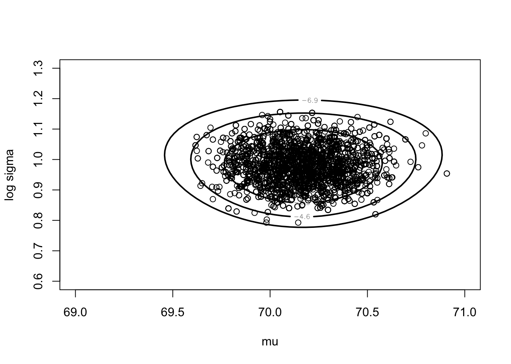
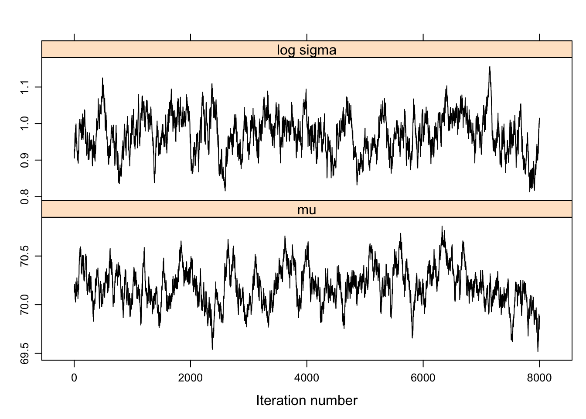
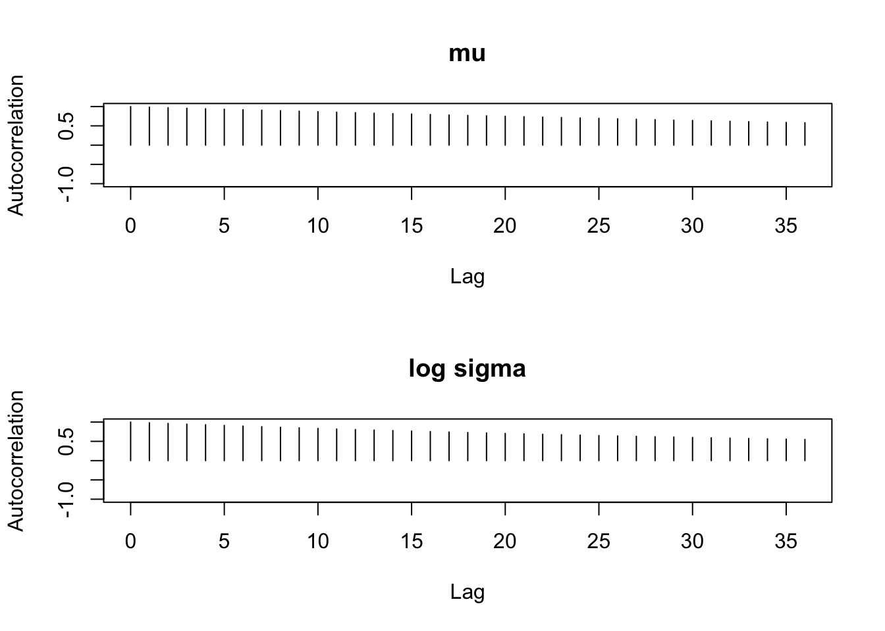
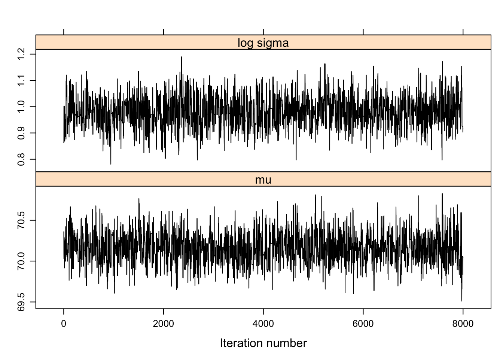
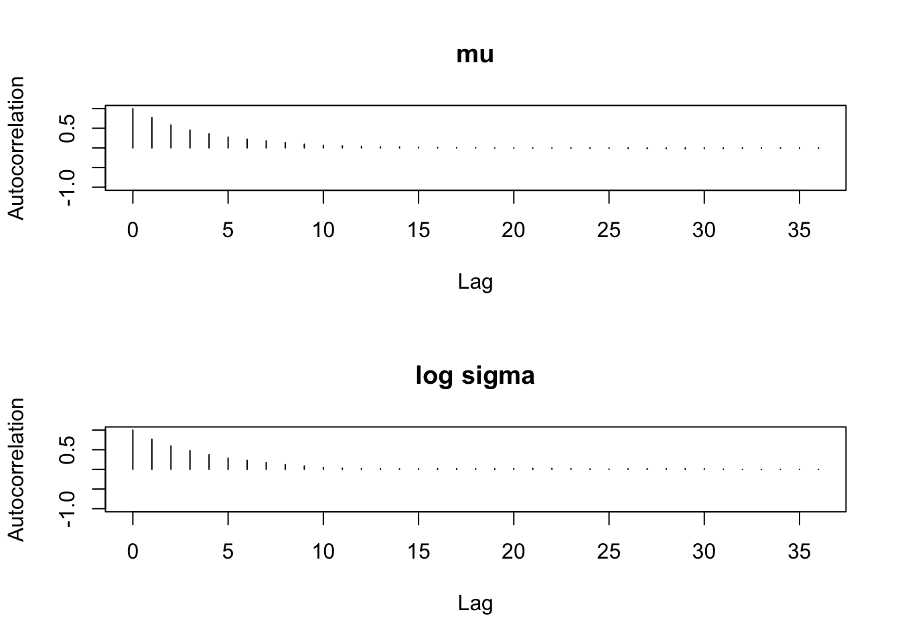
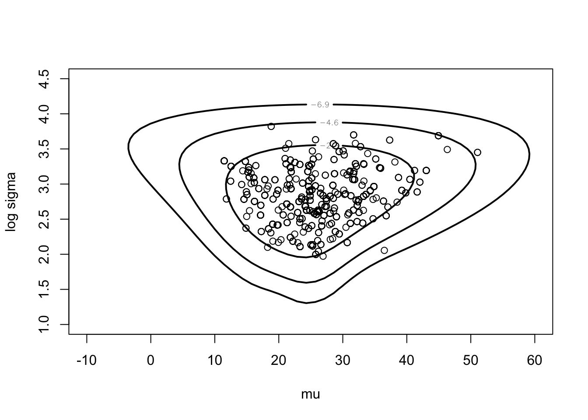
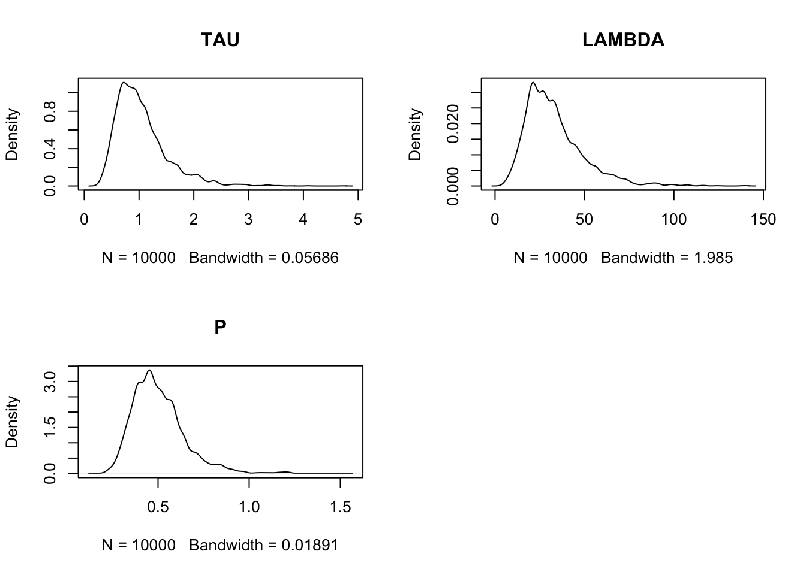
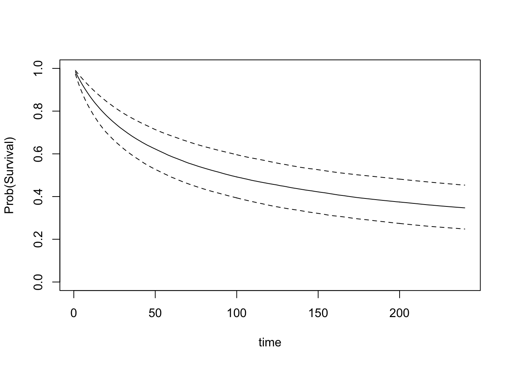

Chapter 6 Markov Chain Monte Carlo Methods
6.1 Introduction to Discrete Markov Chains
Illustration of sampling from a random walk distribution.
P <- matrix(c(.5, .5, 0, 0, 0, 0,
.25, .5, .25, 0, 0, 0,
0, .25, .5, .25, 0, 0,
0, 0, .25, .5, .25, 0,
0, 0, 0, .25, .5, .25,
0, 0, 0, 0, .5, .5),
nrow=6, ncol=6, byrow=TRUE)
P## [,1] [,2] [,3] [,4] [,5] [,6]
## [1,] 0.50 0.50 0.00 0.00 0.00 0.00
## [2,] 0.25 0.50 0.25 0.00 0.00 0.00
## [3,] 0.00 0.25 0.50 0.25 0.00 0.00
## [4,] 0.00 0.00 0.25 0.50 0.25 0.00
## [5,] 0.00 0.00 0.00 0.25 0.50 0.25
## [6,] 0.00 0.00 0.00 0.00 0.50 0.50s <- array(0, c(50000, 1))
s[1] <- 3
for (j in 2:50000){
s[j] <- sample(1:6, size=1, prob=P[s[j - 1],])
}m <- c(500, 2000, 8000, 50000)
for (i in 1:4){
print(table(s[1:m[i]]) / m[i])
}##
## 1 2 3 4 5 6
## 0.102 0.224 0.208 0.186 0.236 0.044
##
## 1 2 3 4 5 6
## 0.1075 0.2115 0.2110 0.2180 0.1765 0.0755
##
## 1 2 3 4 5 6
## 0.095250 0.189875 0.219000 0.215875 0.193875 0.086125
##
## 1 2 3 4 5 6
## 0.09686 0.19760 0.20490 0.20618 0.19830 0.09616w <- matrix(c(.1, .2, .2, .2, .2, .1),
nrow=1, ncol=6)
w %*% P## [,1] [,2] [,3] [,4] [,5] [,6]
## [1,] 0.1 0.2 0.2 0.2 0.2 0.16.2 Learning about a Normal Population from Grouped Data
Have normally distributed data where the data is observed in grouped form. Consider the posterior of \((\mu, \log \sigma)\).
d <- list(int.lo=c(-Inf, seq(66, 74, by=2)),
int.hi=c(seq(66, 74, by=2), Inf),
f=c(14, 30, 49, 70, 33, 15))y <- c(rep(65,14), rep(67,30), rep(69,49),
rep(71,70), rep(73,33), rep(75,15))
mean(y)## [1] 70.16588log(sd(y))## [1] 0.9504117First obtain normal approximation to posterior.
start <- c(70, 1)
fit <- laplace(groupeddatapost, start, d)
fit## $mode
## [1] 70.169880 0.973644
##
## $var
## [,1] [,2]
## [1,] 3.534713e-02 3.520776e-05
## [2,] 3.520776e-05 3.146470e-03
##
## $int
## [1] -350.6305
##
## $converge
## [1] TRUENow use a Metropolis (random walk) MCMC algorithm.
modal.sds <- sqrt(diag(fit$var))
proposal <- list(var=fit$var, scale=2)
fit2 <- rwmetrop(groupeddatapost,
proposal,
start,
10000, d)fit2$accept## [1] 0.2908post.means <- apply(fit2$par, 2, mean)
post.sds <- apply(fit2$par, 2, sd)
cbind(c(fit$mode), modal.sds)## modal.sds
## [1,] 70.169880 0.18800834
## [2,] 0.973644 0.05609341cbind(post.means, post.sds)## post.means post.sds
## [1,] 70.1636783 0.18672292
## [2,] 0.9811132 0.05767941mycontour(groupeddatapost,
c(69, 71, .6, 1.3), d,
xlab="mu",ylab="log sigma")
points(fit2$par[5001:10000, 1],
fit2$par[5001:10000, 2])
6.3 Example of Output Analysis
Illustrate MCMC diagnositics for different Metropolis chains with different proposal widths.
d <- list(int.lo=c(-Inf, seq(66, 74, by=2)),
int.hi=c(seq(66, 74, by=2), Inf),
f=c(14, 30, 49, 70, 33, 15))library(coda)
library(lattice)start <- c(70,1)
fit <- laplace(groupeddatapost, start, d)start <- c(65,1)
proposal <- list(var=fit$var, scale=0.2)
bayesfit <- rwmetrop(groupeddatapost,
proposal,
start,
10000, d)dimnames(bayesfit$par)[[2]] <- c("mu", "log sigma")
xyplot(mcmc(bayesfit$par[-c(1:2000), ]),
col="black")
par(mfrow=c(2, 1))
autocorr.plot(mcmc(bayesfit$par[-c(1:2000), ]),
auto.layout=FALSE)
summary(mcmc(bayesfit$par[-c(1:2000), ]))##
## Iterations = 1:8000
## Thinning interval = 1
## Number of chains = 1
## Sample size per chain = 8000
##
## 1. Empirical mean and standard deviation for each variable,
## plus standard error of the mean:
##
## Mean SD Naive SE Time-series SE
## mu 70.1880 0.19752 0.0022083 0.025874
## log sigma 0.9709 0.05422 0.0006062 0.006305
##
## 2. Quantiles for each variable:
##
## 2.5% 25% 50% 75% 97.5%
## mu 69.8124 70.0563 70.1806 70.31 70.588
## log sigma 0.8628 0.9342 0.9723 1.01 1.071 batchSE(mcmc(bayesfit$par[-c(1:2000), ]),
batchSize=50)## mu log sigma
## 0.013983542 0.003739656start <- c(70,1)
proposal <- list(var=fit$var, scale=2.0)
bayesfit <- rwmetrop(groupeddatapost,
proposal,
start,
10000, d)dimnames(bayesfit$par)[[2]] <- c("mu", "log sigma")
sim.parameters <- mcmc(bayesfit$par[-c(1:2000), ])
xyplot(mcmc(bayesfit$par[-c(1:2000), ]),
col="black")
par(mfrow=c(2,1))
autocorr.plot(sim.parameters,auto.layout=FALSE)
summary(sim.parameters)##
## Iterations = 1:8000
## Thinning interval = 1
## Number of chains = 1
## Sample size per chain = 8000
##
## 1. Empirical mean and standard deviation for each variable,
## plus standard error of the mean:
##
## Mean SD Naive SE Time-series SE
## mu 70.165 0.18467 0.0020646 0.005728
## log sigma 0.982 0.05744 0.0006422 0.001770
##
## 2. Quantiles for each variable:
##
## 2.5% 25% 50% 75% 97.5%
## mu 69.8097 70.0346 70.1650 70.289 70.542
## log sigma 0.8715 0.9416 0.9817 1.021 1.101 batchSE(sim.parameters, batchSize=50)## mu log sigma
## 0.005387819 0.0017516756.4 Modeling Data with Cauchy Errors
Assuming data that is sampled from a Cauchy density with a noninformative prior placed on the location and scale parameters.
mean(darwin$difference)## [1] 21.66667log(sd(darwin$difference))## [1] 3.65253First illustrate normal approximation.
laplace(cauchyerrorpost,
c(21.6, 3.6),
darwin$difference)## $mode
## [1] 24.701745 2.772619
##
## $var
## [,1] [,2]
## [1,] 34.9600525 0.3672899
## [2,] 0.3672899 0.1378279
##
## $int
## [1] -73.2404
##
## $converge
## [1] TRUElaplace(cauchyerrorpost,
.1 * c(21.6,3.6),
darwin$difference)$mode## [1] 24.698151 2.772345c(24.7 - 4 * sqrt(34.96), 24.7 + 4 * sqrt(34.96))## [1] 1.049207 48.350793c(2.77 - 4 * sqrt(.138), 2.77 + 4 * sqrt(.138))## [1] 1.284066 4.255934mycontour(cauchyerrorpost,
c(-10, 60, 1, 4.5),
darwin$difference,
xlab="mu", ylab="log sigma")
fitlaplace <- laplace(cauchyerrorpost,
c(21.6, 3.6),
darwin$difference)mycontour(lbinorm,
c(-10, 60, 1, 4.5),
list(m=fitlaplace$mode,
v=fitlaplace$var),
xlab="mu",ylab="log sigma")
Next illustrate random walk Metropolis.
proposal <- list(var=fitlaplace$var, scale=2.5)
start <- c(20, 3)
m <- 1000
s <- rwmetrop(cauchyerrorpost, proposal,
start, m, darwin$difference)mycontour(cauchyerrorpost,
c(-10, 60, 1, 4.5),
darwin$difference,
xlab="mu", ylab="log sigma")
points(s$par[,1], s$par[,2])
fitgrid <- simcontour(cauchyerrorpost,
c(-10,60,1,4.5),
darwin$difference,
50000)proposal <- list(var=fitlaplace$var,
scale=2.5)
start=c(20, 3)
fitrw=rwmetrop(cauchyerrorpost,
proposal,
start,
50000,
darwin$difference)Illustrate metropolis-hastings independence chain.
proposal2 <- list(var=fitlaplace$var,
mu=t(fitlaplace$mode))
fitindep <- indepmetrop(cauchyerrorpost,
proposal2,
start,
50000,
darwin$difference)Illustrate metropolis-within-Gibbs.
fitgibbs <- gibbs(cauchyerrorpost,
start,
50000,
c(12,.75),
darwin$difference)apply(fitrw$par,2,mean)## [1] 25.696204 2.841003apply(fitrw$par,2,sd)## [1] 7.1026378 0.37788866.5 Analysis of the Stanford Heart Transplant Data
Using a Pareto model to analyze heart transplant data.
Laplace fit.
start <- c(0, 3, -1)
laplacefit <- laplace(transplantpost,
start, stanfordheart)
laplacefit## $mode
## [1] -0.09210954 3.38385249 -0.72334008
##
## $var
## [,1] [,2] [,3]
## [1,] 0.172788525 -0.009282308 -0.04995160
## [2,] -0.009282308 0.214737054 0.09301323
## [3,] -0.049951602 0.093013230 0.06891796
##
## $int
## [1] -376.2504
##
## $converge
## [1] TRUERandom walk metropolis.
proposal <- list(var=laplacefit$var, scale=2)
s <- rwmetrop(transplantpost,
proposal,
start, 10000, stanfordheart)
s$accept## [1] 0.1893par(mfrow=c(2,2))
tau <- exp(s$par[,1])
plot(density(tau), main="TAU")
lambda <- exp(s$par[,2])
plot(density(lambda), main="LAMBDA")
p <- exp(s$par[,3])
plot(density(p), main="P")
apply(exp(s$par), 2, quantile, c(.05, .5, .95))## [,1] [,2] [,3]
## 5% 0.4880657 13.43615 0.3149892
## 50% 0.9422897 29.55993 0.4807512
## 95% 1.9776292 64.32047 0.7666747par(mfrow=c(1, 1))
t <- seq(1, 240)
p5 <- 0*t
p50 <- 0 * t
p95 <- 0 * t
for (j in 1:240){
S <- (lambda / (lambda + t[j])) ^ p
q <- quantile(S, c(.05, .5, .95))
p5[j] <- q[1]
p50[j] <- q[2]
p95[j] <- q[3]
}Estimating a patient’s survival curve.
plot(t, p50, type="l",
ylim=c(0,1),
ylab="Prob(Survival)",
xlab="time")
lines(t, p5, lty=2)
lines(t, p95, lty=2)